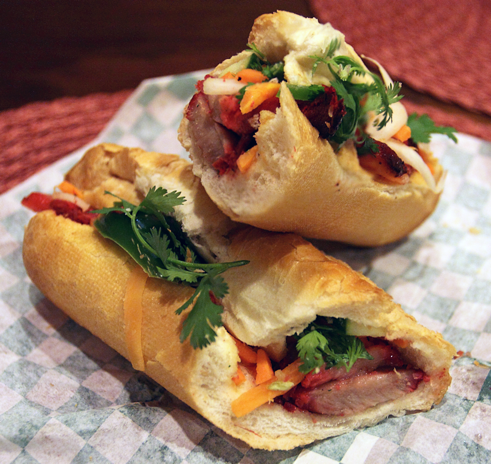
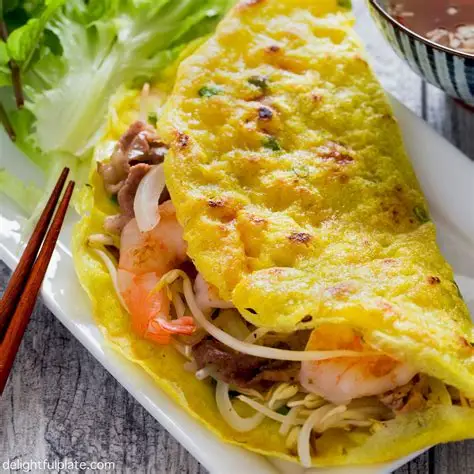
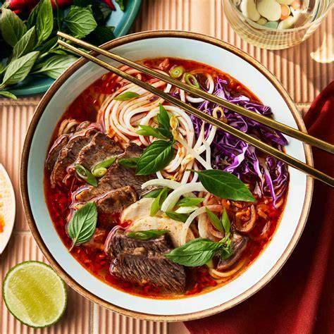
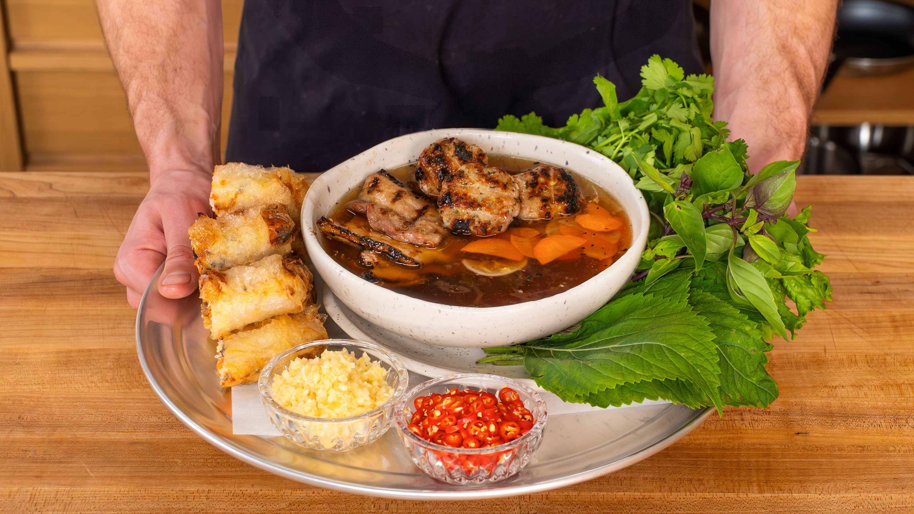
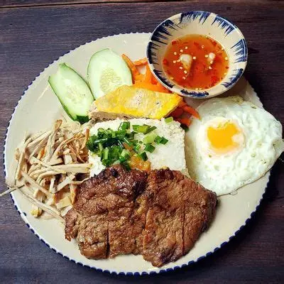
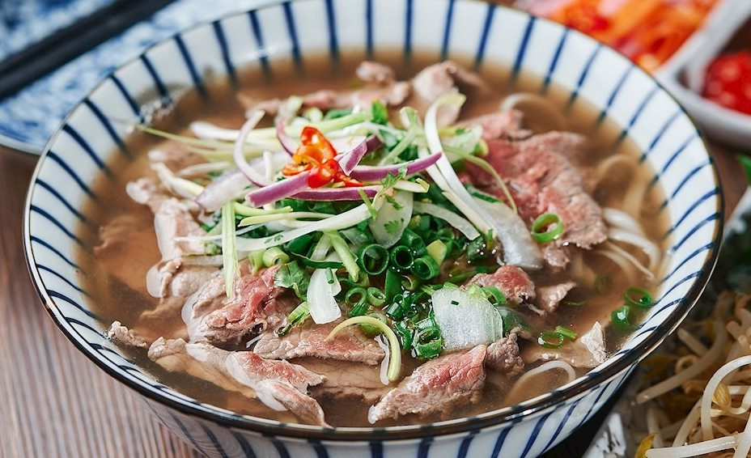
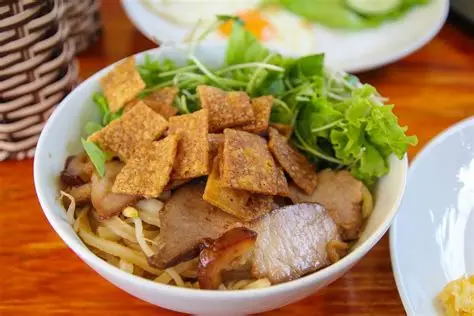

Discover the vibrant flavors of Vietnam through nine iconic dishes, ranging from the world-famous, aromatic Beef Phở and crispy Bánh Mì to savory regional specialties like Huê's spicy Bún Bò and Hoi An's unique Cao Lầu. Each creation reflects centuries of culinary heritage, balancing fresh herbs, rich broths, and distinct textures that tell the story of Vietnamese culture.
Whether you are craving the smoky charm of Hanoi Bún Chả, the refreshing crunch of fresh spring rolls, or the satisfying comfort of Saigon Broken Rice, this collection brings authentic street food right to your screen. Explore high-quality imagery and recipes for every dish to inspire your next culinary adventure.








